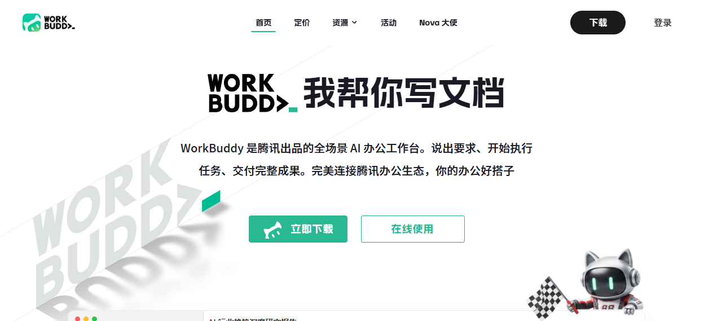
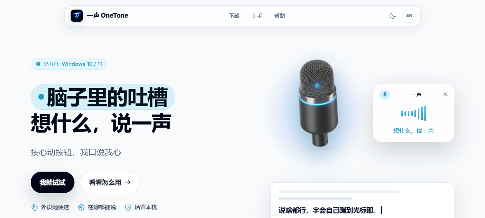

通过对比两个官网的首屏结构、视觉语言、转化路径与社会证明，找出 OneTone 当前 website 可直接复用的改进点。
线上 www.onetone.app 当前展示的是浅色、3D 麦克风 hero 的旧版；而仓库中 website/index.html 已是深色 HUD + story scroll 的新版。用户看到的内容 ≠ 你正在迭代的内容，需先对齐部署。
WorkBuddy 把「真产品外壳」直接搬到首屏，并配套 4 档定价、30+ 客户 logo 墙、生态连接器。OneTone 有沉浸式 story demo，但缺少量化价值、社会证明、定价锚点和明确的用户旅程终点。
| 页面 | Title | Description | 备注 |
|---|---|---|---|
| index.html | 一声 OneTone — 想什么，说一声 | 按一下侧键就能开麦… | 完整 |
| download.html | 下载 — 一声 OneTone | 下载一声 Windows 安装包… | 转化页 |
| quickstart.html | 语音与按键 — 一声 OneTone | 三步上手：选个键… | 与 keys 标题重复 |
| keys.html | 语音与按键 — 一声 OneTone | 绑定外设或快捷键… | 重复标题 |
| vision.html | 摄像头 — 一声 OneTone | 摄像头帮你眨眼、摇头就触发… | 完整 |
| agent.html | SoftPad — 一声 OneTone | 屏幕上的虚拟小键盘… | 完整 |
| faq.html | 帮助与排错 — 一声 OneTone | 常见问题：按键没反应… | 完整 |
| support.html | 支持项目 — 一声 OneTone | 通过爱发电自愿支持… | 完整 |
| changelog.html | 更新日志 — 一声 OneTone | 更新日志 — 一声 OneTone | description 无价值 |
| privacy / terms | 隐私政策 / 服务条款 | — | 合规页 |
基于浏览器实际渲染抓取，非静态 HTML。官网是 SPA，整体采用浅色背景 + 薄荷绿品牌色 + 3D 机器人吉祥物风格。

WorkBuddy 首屏：大 logo + "我帮你" 轮播文案 + 双 CTA + 3D 吉祥物
"我帮你" 3 个字 + 一句 60 字以内的价值主张。用户 3 秒就能读懂。
不是静态截图，而是完整 App 外壳 + 工具调度时间线 + 产物下载。降低理解成本。
"从查资料到给结论，15 分钟交付报告" —— 用具体时间数字替代"高效"。
生态墙讲"能连什么"，客户墙讲"谁在用"。两排 marquee 不停滚动强化信任。
首页就有 4 档方案，用划线价和"限时免费"锚定价值。
列出 Mac / Windows / iOS / Android / 鸿蒙，并标注"当前设备"，减少用户犹豫。

线上 www.onetone.app：浅色 + 3D 麦克风 + 旋转文案
WorkBuddy：浅色 + 大 logo + 机器人吉祥物
线上 OneTone 在视觉风格上其实与 WorkBuddy 更接近（浅色、大插画、短文案），说明之前已有向"轻量官网"靠拢的尝试。但本地源码又切回了深色 HUD 故事线，造成用户-facing 品牌不统一。
| 维度 | OneTone（本地新版） | WorkBuddy | 可借鉴经验 |
|---|---|---|---|
| Hero 文案 | 标题 + 长句 + 故事章节 | 3 字 punchline + 1 句价值 | 把首页 headline 缩短到 10 字以内 |
| 首屏 Demo | 设备 SVG + 打字机动画 | 真实 App 外壳 + 任务时间线 | 做一个"可看到任务完成"的产品演示壳 |
| 量化价值 | 无 | "15 分钟交付报告" | 给时间/效率数字，如"3 分钟装好" |
| 社会证明 | 品牌兼容墙 + 海外用户评价 | 客户 logo 墙 + 生态连接器 + 腾讯背书 | 增加"谁在用"真实客户/社区背书 |
| 定价 | 无 | 4 档 + 划线价 + 限免 | 若商业化，首页增加方案区 |
| 导航 | 首页 / 上手 / 帮助 + 下载 | 首页 / 定价 / 资源 / 活动 / Nova 大使 + 下载/登录 | 增加定价/资源/活动入口 |
| 下载入口 | Windows 10/11 | Mac / Win / iOS / Android / 鸿蒙 | 明确多平台 roadmap |
| Footer | 功能链接 + 法律链接 | 4 列 + 小程序/公众号二维码 | 结构化 footer，增加社群触点 |
| 优先级 | 问题 | 影响 | 修复动作 |
|---|---|---|---|
| P0 | 线上版与本地源码视觉不一致 | 用户看到的内容 ≠ 产品实际方向 | 确认 GitHub Pages 部署状态；统一 brand direction |
| P0 | quickstart.html 与 keys.html 标题重复 | SEO 冲突，搜索引擎难以区分 | quickstart 改为"快速上手 — 一声 OneTone" |
| P1 | changelog.html description 无价值 | 搜索结果点击率降低 | 改为"一声 OneTone 版本更新日志，包含功能、修复与改进。" |
| P1 | i18n 英文包缺 8 个 key | 切 EN 时部分文案显示 key 名或空白 | 补齐 qsStep1Desc / qsStep1Title 等 8 个 key |
| P1 | 首页无定价/无明确用户旅程终点 | 高意向用户找不到转化路径 | 在首页增加方案/下载锚点与 sticky CTA |
| P2 | 品牌兼容墙只有工具 logo，无真实客户 | 社会证明弱 | 增加社区/用户/媒体背书区 |
| P2 | 导航缺少资源/活动入口 | 内容营销与社区运营缺少入口 | 增加"资源""活动"或"博客"导航项 |
"想什么，说一声"
按一下侧键就能开麦。Cursor、Claude、Trae……在哪写就在哪说，不用先找麦克风按钮。
"侧键 = 麦克风"
3 分钟装好，按一下就在当前 App 里说话输入。支持 Windows 10/11。
参考 WorkBuddy 的"产品演示壳"，在 OneTone hero 下方放一个左右分栏：
把现在的"品牌兼容墙"拆成两层：
即使目前免费，也可学习 WorkBuddy 放一档：
这样既能收集意愿，又不影响当前免费体验。
| 阶段 | 动作 | 预期收益 | 工作量 |
|---|---|---|---|
| 本周 | 确认并修复线上/本地版本不一致；修复重复 title 与缺英文 key | 消除品牌分裂与 SEO 冲突 | 小 |
| 2 周内 | 重写 Hero headline + 副标题；增加 3–4 个量化指标 | 首屏转化率提升 | 小 |
| 2–4 周 | 把现有 story demo 封装成"产品演示壳"放在 hero 下方 | 降低理解成本 | 中 |
| 1–2 月 | 增加真实用户/社区背书区；优化 footer 结构 | 建立社会信任 | 中 |
| 按需 | 增加定价/方案区与多平台下载说明 | 为商业化做准备 | 小 |